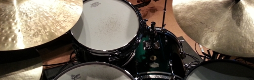
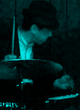

Profile
70年代半ばに
音楽活動を開始，'70年代末～'80年代初頭にかけ，“R-Grey”や“21(Twenty one)”などのロック／ポップ系バンドでライブ活動とともに各種コンテスト(Midland/LMC， POPCON， Fresh Sounds Contest等)に参加。 共演者やソングライターに恵まれ，コンテストでは常に何らかの賞を受賞。POPCONでは中部地区代表として中部北陸大会まで出場。 同時期，某コンテストでベストドラマー賞を取ったのをきっかけに営業ドラマーとしての誘いを受け， '80年代半ばまで愛知，岐阜，三重，静岡，長野，滋賀，大阪などでイベント演奏や歌手のバックバンド， ハコ等，様々な形態／ジャンルでの演奏活動を行うことになる。 その後10年間近くのブランク後，'90年代半ばに100%趣味として活動再開。 最近は四日市市を拠点とし，Jazzを中心にBlues，Rock，Pops等のジャンルにも首を突っ込む （相変わらずの）横好きドラマーとして細く長く楽しんでいる。主な参加ユニットは
田中健二(g)カルテット(aka“The Groovin”)，伊藤麻祐子(p)トリオ等。 他に単発ユニットでのライブ，セッションホスト等も。 時々名古屋や四日市のジャムセッションに出没。 （ライブ予定はこちら）約50年前の
初心者向けドラムセット Pearl“Valencia”(1974年製)を改造・修理しながら今も相棒にすることがあるのは， 物を大切にする心…というよりは，軽くてコンパクトで意外に丈夫，そして独特のレトロ感から。 ただ，枯れた音のよさはあるものの湿気にはめっぽう弱く，雨の日には極端に鳴りが悪くなる気分屋。他には，ポップス・ロック・ビッグバンド等にオールラウンドな Pearl GX “Giant Step”， 廃品同様で入手した中古品をフルレストアし， SIXTY SIX (旧 Full House) に常置しているファイバー胴の Pearl PX “President”， １畳あればセッティング可能な「どこでもドラム」 PureCussion RIMS HeadSet， リーマン・ショックの円高(2008年)に乗じて個人輸入した銘器 Gretsch USA Custom などを愛用。 詳細は“My Gear”へ。

Upcoming Gigs
2026年
【1月】
3(土) Amelia with 'S Wonderful Trio{kind=link}
20:30 VeeJay/四日市
Amelia(vo)，森田純代(p)，西村ヒロ(b)
9(金) Bossa Nova Night w 朝香・草野由花子
Amelia(vo)，森田純代(p)，西村ヒロ(b)
{kind=link}
20:00 SIXTY SIX/四日市
青木弦六(g)，Woody坂倉(b)，朝香(vo)，草野由花子(p,鍵ハモ)
10(土) June 6th in California
青木弦六(g)，Woody坂倉(b)，朝香(vo)，草野由花子(p,鍵ハモ)
{kind=link}
20:00 SIXTY SIX/四日市
西川雄三郎(g)，竹内一路(g)，モロオカケイイチ(b)，タナジュン(p,vo)，Dan Wilkinson(vo)
21(水) 66 Session Vol.152(66 111回)
西川雄三郎(g)，竹内一路(g)，モロオカケイイチ(b)，タナジュン(p,vo)，Dan Wilkinson(vo)
{kind=link}
20:00 SIXTY SIX/四日市
森田純代(p)，土田邦夫(b)
23(金) Carrera Jam Session Vol.90(83)
森田純代(p)，土田邦夫(b)
{kind=link}
19:30 Carrera/鈴鹿
石橋大輔(p)，串原光星(b)
25(日) 吉田淳子＋後藤勇人４
石橋大輔(p)，串原光星(b)
{kind=link}
15:00 河崎蔵/伊勢
吉田淳子(vo)，後藤勇人(ts)，野坂美紀(g)，伊藤靖雄(b)
31(土) 森まいん＋仲尾ユウ3
吉田淳子(vo)，後藤勇人(ts)，野坂美紀(g)，伊藤靖雄(b)
{kind=link}
20:30 VeeJay/四日市
森まいん(vo)，仲尾ユウ(p)，串原光星(b)
森まいん(vo)，仲尾ユウ(p)，串原光星(b)
【2月】
6(金) Bossa Nova Night w はやみまき{kind=link}
20:00 SIXTY SIX/四日市
青木弦六(g)，Woody坂倉(b)，はやみまき(vo)
14(土) 305SP
青木弦六(g)，Woody坂倉(b)，はやみまき(vo)
{kind=link}
20:30 VeeJay/四日市
美和子(vo)，小笠原岳海(g)，ヒゲベ(b)
15(日) イトウマユコ3
美和子(vo)，小笠原岳海(g)，ヒゲベ(b)
{kind=link}
14:00 SIXTY SIX/四日市
イトウマユコ(p)，串原光星(b)，yoheyhey(vo)
15(日) 後藤勇人４
イトウマユコ(p)，串原光星(b)，yoheyhey(vo)
{kind=link}
19:00 Carrera/鈴鹿
後藤勇人(ts,ss)，野坂美紀(g)，伊藤靖雄(b)，メグ・ササキ(vo)
18(水) 66 Session
後藤勇人(ts,ss)，野坂美紀(g)，伊藤靖雄(b)，メグ・ササキ(vo)
20:00 SIXTY SIX/四日市
森田純代(p)，土田邦夫(b)
22(日) Joshua Breakstone Trio
森田純代(p)，土田邦夫(b)
{kind=link}
19:30 Bran/津
Joshua Breakstone(g)，荒川悟志(b)
27(金) Carrera Jam Session Vol.90(83)
Joshua Breakstone(g)，荒川悟志(b)
19:30 Carrera/鈴鹿
馬橋清(p)，西村ヒロ(b)
馬橋清(p)，西村ヒロ(b)
J.A.
remmurd@clrlab.net
Last update : Jan.21